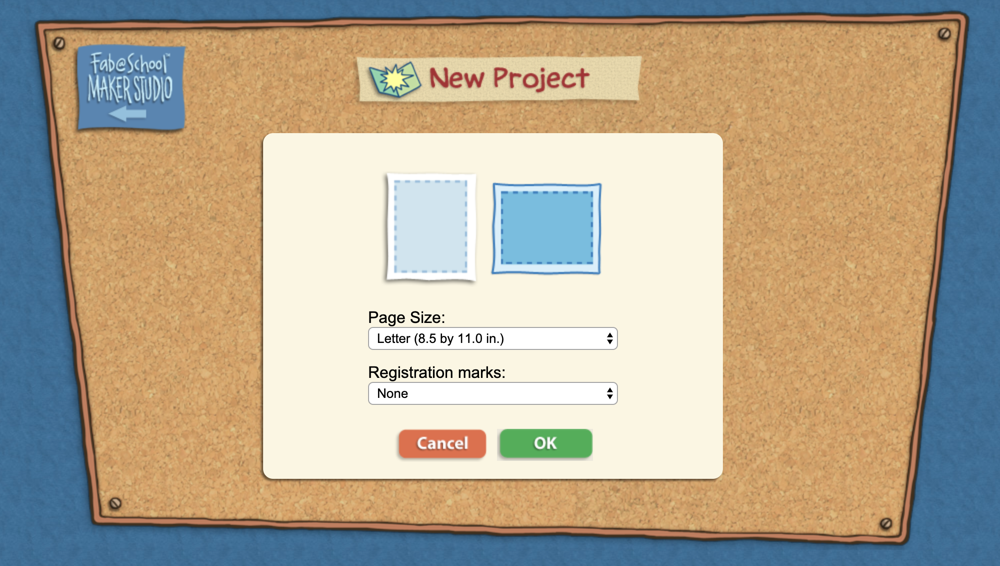
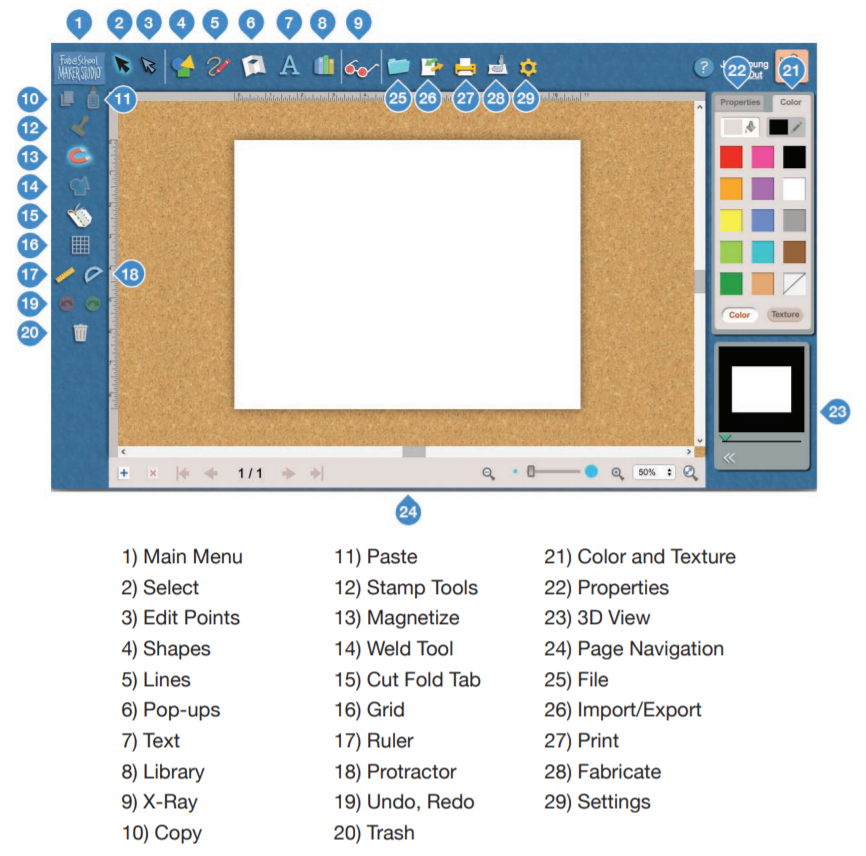
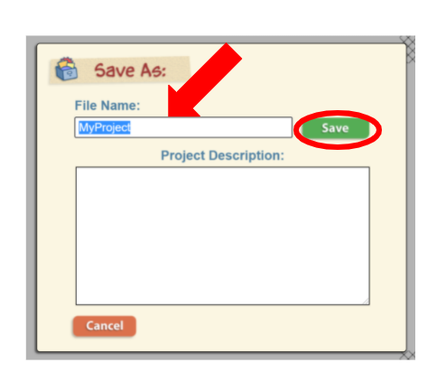

Information About FabMaker Studio
Quick Links
- FabMaker Studio Website
- FabMaker Studio Quick Start Guide
- FabMaker Studio Tutorials
- FabMaker Studio User Guide
What is FabMaker Studio?
FabMaker Studio is a web-based digital design and fabrication software that allows you to design, print, and build 2D and 3D projects. You can print your designs using a regular printer or a variety of 2D and 3D digital fabricators.
How Do You Use FabMaker Studio?
How to Login
- Open FabMaker Studio
- You will need a username and password to login. If you need help, ask your facilitator.
- Login
How to Start a New Project
- Go to FabMaker Studio and login.
- Start a New Project.
- Choose your project settings and click OK.

Overview of Toolbar
There are a variety of tools that can help you design in FabMaker Studio. Detailed information about the Toolbar can be found in the FabMaker Studio User Guide on page 7.

Add and Edit Shape Cut-Outs
- To add a shape, click on the shape tool and select the shape you want to add.
- Use the squares at the corner of the shape to make it bigger or smaller.
- Click in the center of the shape to move it.
Draw Lines
- To draw a line, Click on the drawing tool.
- Choose a line tool, curve tool, or brush tool.
- Use the tool to add lines to your creation.
- Click on the drawing tool again to turn off the drawing tool.
How to Save
- To save, Click on the file picture.
- Click on the Save button.
- Projects can be saved Online, in Google Drive, or to your computer. Note: Projects saved to My Computer will show up in the downloads folder.
- Choose a File Name and click Save.

How to Download and Print
- Click on the print picture.
- Select the options for Print Cut & Fold Lines and Remove Color Fill.
- Click Save to PDF.
- Open the PDF and print to a printer in your classroom or school.

Explore On Your Own
Check out the FabMaker Studio Tutorials for more helpful information.